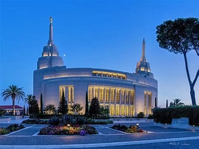
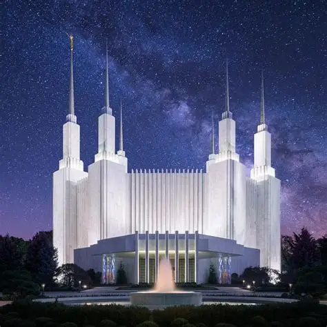
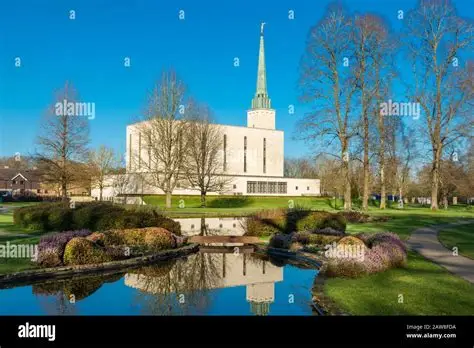
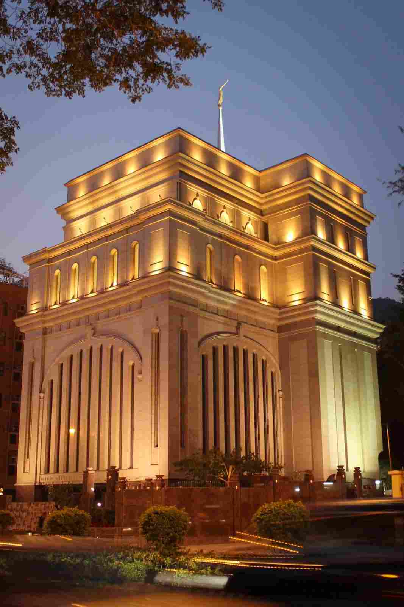
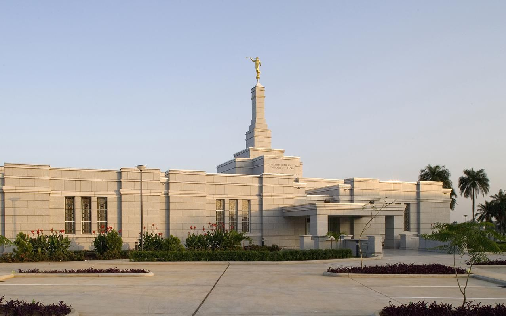

```html
<!DOCTYPE html>
<html lang="en">
<head>
    <meta charset="UTF-8">
    <meta name="viewport" content="width=device-width, initial-scale=1.0">

    <meta name="description" content="Temple Album featuring beautiful temples of The Church of Jesus Christ of Latter-day Saints.">
    <meta name="author" content="Abubakar Kelvin">

    <title>Temple Album - Abubakar Kelvin</title>

    <link rel="stylesheet" href="styles/temples.css">
    <link rel="stylesheet" href="styles/temples-large.css">

    <script src="scripts/temples.js" defer></script>
</head>

<body>

    <header>
        <div class="header-content">
            <span>Temple Album</span>

            <button id="menu" aria-label="Open navigation menu">
                ☰
            </button>
        </div>

        <nav>
            <a href="#">Home</a>
            <a href="#">Old</a>
            <a href="#">New</a>
            <a href="#">Large</a>
            <a href="#">Small</a>
        </nav>
    </header>

    <main>
        <h1>Temple Album</h1>

        <div class="temple-grid">

            <figure>
                
                <figcaption>san Diego California Temple</figcaption>
            </figure>

            <figure>
                
                <figcaption>italy rome temple</figcaption>
            </figure>

            <figure>
                
                <figcaption>washington d.c. temple</figcaption>
            </figure>

            <figure>
                
                <figcaption>london england temple</figcaption>
            </figure>

            <figure>
                
                <figcaption>usa new york temple</figcaption>
            </figure>

            <figure>
                
                <figcaption>china Temple</figcaption>
            </figure>

            <figure>
                
                <figcaption> NigeriaBenin city Temple</figcaption>
            </figure>

            <figure>
                
                <figcaption>Nigeria Aba Temple</figcaption>
            </figure>

            <figure>
                
                <figcaption>Chicago Illinois Temple</figcaption>
            </figure>

        </div>
    </main>

    <footer>
        <p>
            &copy; <span id="currentyear"></span> Abubakar Kelvin, Nigeria
        </p>

        <p id="lastModified"></p>
    </footer>

</body>
</html>
```
